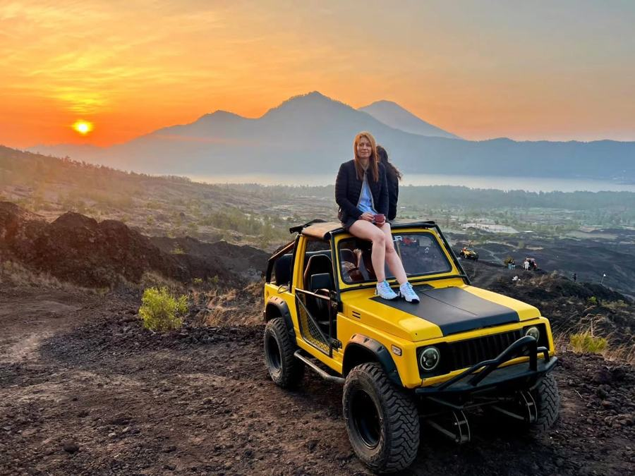
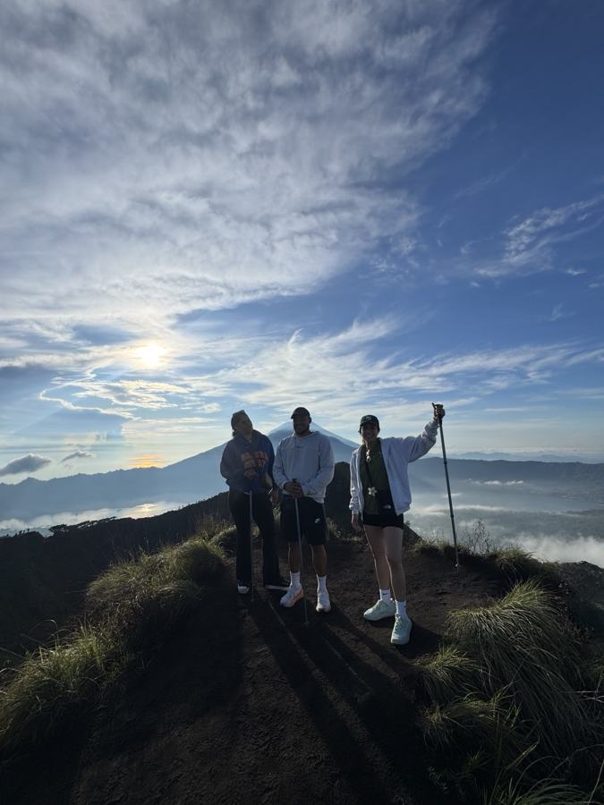
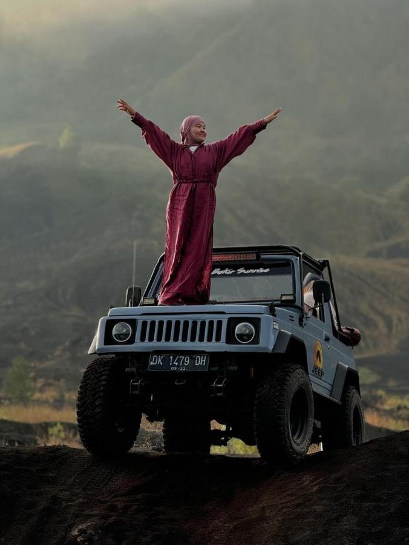
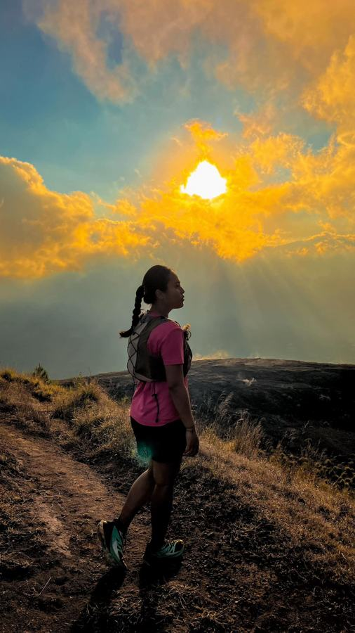
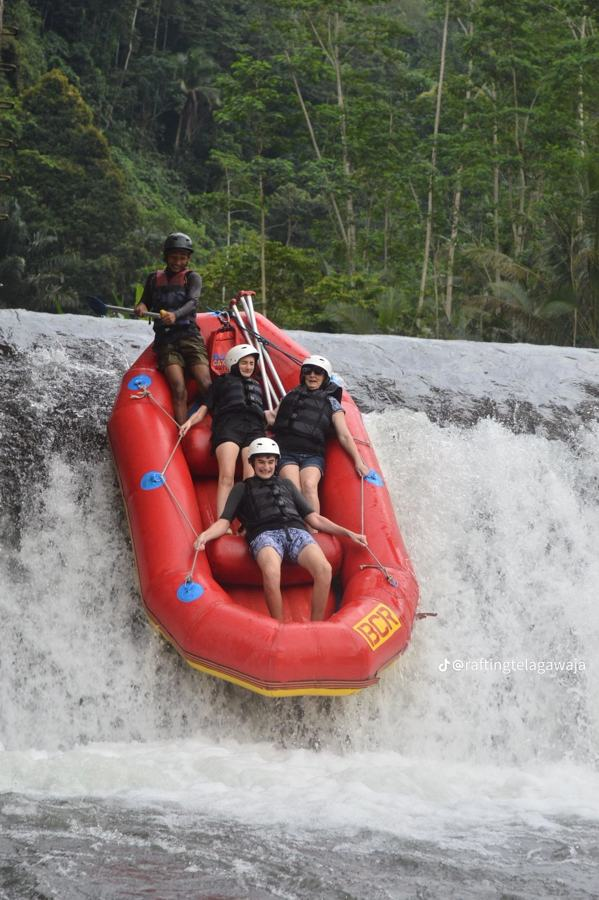
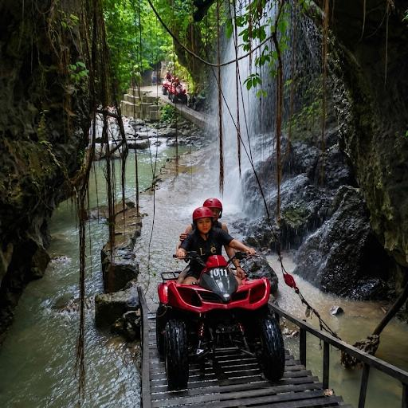
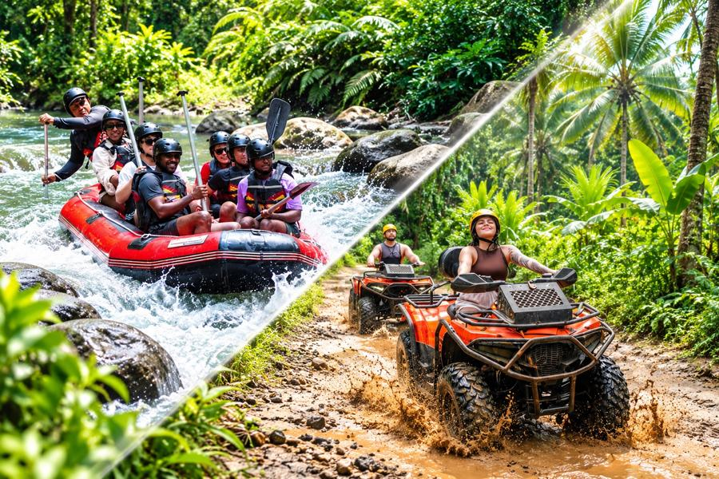
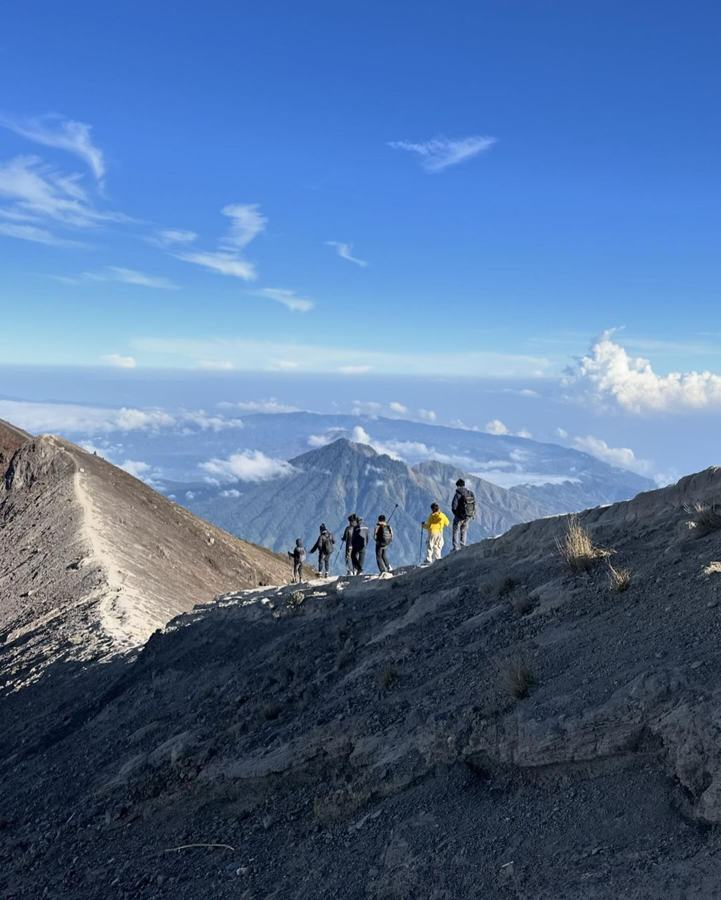
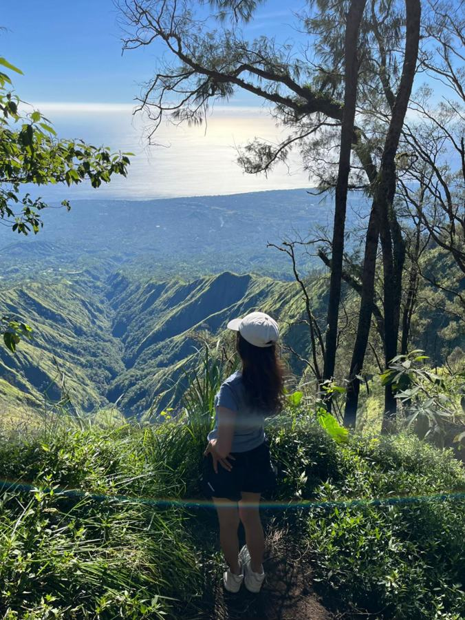
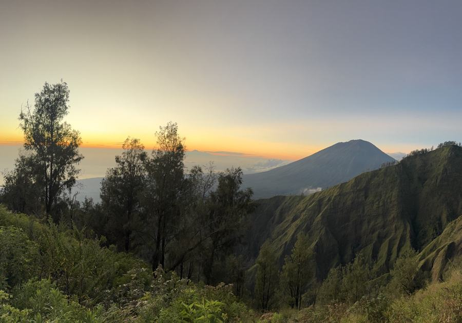

Driver & Guide Lokal Profesional
Nikmati perjalanan bersama pengemudi Jeep lokal yang mengenal kawasan Gunung Batur. Bantuan foto dapat diminta selama kondisi dan situasi memungkinkan.
MOUNT BATUR SUNSET JEEP EXPERIENCE
Jelajahi lanskap vulkanik Gunung Batur dengan Jeep 4WD privat dan nikmati suasana matahari terbenam. Pilih salah satu dari tiga paket, mulai dari Sunset Only hingga kunjungan ke Floating Temple, Black Lava, dan Black Sand.
Choose your preferred package and complete your booking details
KEUNGGULAN LAYANAN
Komitmen kami untuk memberikan pengalaman Sunset Jeep Trip yang nyaman, jelas, dan berkesan.
Nikmati perjalanan bersama pengemudi Jeep lokal yang mengenal kawasan Gunung Batur. Bantuan foto dapat diminta selama kondisi dan situasi memungkinkan.
Jelajahi kawasan Gunung Batur menggunakan Jeep 4WD. Rute off-road mengikuti kondisi jalan dan akses lokasi pada hari perjalanan.
Setiap paket mencakup perjalanan Jeep sesuai rute yang tercantum pada pilihan trip. Hotel transfer, tiket masuk destinasi, dan konsumsi perlu diperiksa pada rincian biaya sebelum booking.
Nikmati panorama kawasan Kaldera Batur dan lanskap vulkanik sesuai paket yang dipilih. Kunjungan ke Black Lava, Black Sand, dan Floating Temple hanya termasuk pada paket yang mencantumkan lokasi tersebut.
Jelajahi kawasan vulkanik Gunung Batur dengan Jeep 4WD tanpa perlu melakukan pendakian panjang.
Saksikan keindahan Gunung Agung, Gunung Abang, dan Danau Batur dalam satu perjalanan yang mengesankan.
Rasakan sensasi off-road melintasi hamparan batuan lava hitam yang eksotis, dengan latar belakang pemandangan alam yang luar biasa dan cocok untuk mengabadikan momen liburan Anda.


Urutan dan waktu kunjungan dapat menyesuaikan kondisi cuaca, lalu lintas, serta operasional di lapangan.
Periksa rincian rute setiap paket serta biaya tambahan yang mungkin berlaku, seperti hotel transfer atau tiket masuk destinasi yang tidak termasuk dalam harga paket.
Hotel transfer tidak termasuk dalam harga Jeep. Layanan ini dapat dipilih sebagai tambahan dengan biaya sesuai area penjemputan.
Tiket atau biaya aktivitas tambahan, termasuk hot spring, tidak termasuk kecuali dipilih dan dikonfirmasi secara tertulis.
Biaya masuk, parkir, atau retribusi destinasi tidak dianggap termasuk kecuali dikonfirmasi secara tertulis saat booking.
Belanja pribadi, makanan atau minuman tambahan, serta tip untuk pengemudi tidak termasuk.
Sarapan, minuman, serta selimut atau jaket tidak dinyatakan termasuk dalam harga dasar. Tanyakan kepada tim AWAN TREKKING jika Anda ingin memastikan ketersediaannya.
Untuk Mount Batur Sunset Jeep Trip, siapkan perlengkapan praktis untuk perjalanan sore dan berjalan di area vulkanik. Paket ini berfokus pada sunset dan tidak termasuk trekking sunrise.
Pilih sepatu yang nyaman dan tidak licin untuk berjalan di area pasir hitam atau permukaan vulkanik yang tidak rata.
Bawa topi atau kacamata hitam dan gunakan sunscreen, terutama saat cuaca cerah.
Untuk mengambil foto lanskap Gunung Batur dan spot-spot yang dikunjungi selama tur.
Bawa air minum agar tetap terhidrasi selama perjalanan dan saat berjalan di area destinasi.
Gunakan tas kecil untuk menyimpan air minum, sunscreen, ponsel, dan barang pribadi.
Bawa uang tunai untuk kebutuhan pribadi atau biaya tambahan yang telah dikonfirmasi. Jaket tipis bisa dibawa jika Anda mudah merasa dingin.
Mount Batur Sunset Jeep Trip · AWAN TREKKING
Booking details should include the activity date, number of guests, selected Jeep trip, and pickup information. Your booking will be confirmed after the details have been reviewed.
The deposit and remaining balance follow the payment arrangement agreed at the time of booking. Please confirm the amount and payment method before the activity.
Please be ready at the agreed pickup time. Delays may affect the agreed Sunset Jeep Trip schedule.
Weather, road conditions, and site access may affect the route or order of visits. Sunrise is not included in this day-trip package.
Each package has a different route and inclusions. One Jeep accommodates up to 3 guests; larger groups require additional Jeeps.
Cancellation, date changes, and deposit refund arrangements must be confirmed with AWAN TREKKING when booking.
Quick answers to help you prepare for your Mount Batur Sunset Jeep Trip.
The start time depends on your pickup location and selected package. Your confirmed pickup time will be shared before the activity.
One Jeep accommodates up to 3 people. Groups of more than 3 people will need additional Jeeps.
Inclusions depend on the trip you choose. Please check the Included in the Package section before booking.
Three packages are available: Sunset Only (IDR 700,000/Jeep), Sunset + Black Lava + Black Sand (IDR 800,000/Jeep), and Floating Temple + Black Lava + Black Sand + Sunset (IDR 900,000/Jeep). Each Jeep accommodates a maximum of 3 people.
No. Mount Batur Sunset Jeep Trip is an afternoon-to-evening tour and does not include a sunrise experience.
For the Sunset Jeep Trip, bring comfortable closed-toe shoes, sun protection, a camera or smartphone, drinking water, and a small backpack. Cash for personal expenses may be useful; a light jacket is optional.
Hotel transfer may be selected when available. Choose Hotel Transfer and provide your pickup area when making your booking.
Select your preferred trip and booking details, then use the Book Now option to send your request to AWAN TREKKING.
Make your Bali adventure even more memorable. Explore our other experiences and contact our team for package details and availability.
 BEST SELLER
BEST SELLERExperience a magical sunrise from the summit of Mount Batur with our local guide.

Jeep SunriseEnjoy a spectacular Mount Batur sunrise without hiking, with an exciting 4x4 Jeep adventure and optional scenic stops.

Daytime TrekkingExplore Mount Batur during the day with stunning views, unique lava fields, and a professional local guide.

Jeep Day TripDiscover Mount Batur by 4WD Jeep and enjoy a scenic day exploring the volcanic landscapes of Kintamani.

Sunset TrekkingEnjoy Mount Batur’s golden-hour scenery and spectacular sunset views on a private trek with a local guide.
 WATERFALL EXPEDITION
WATERFALL EXPEDITIONDiscover Kanto Lampo, Tegenungan and Tibumana waterfalls with private AC transport and an experienced local guide.

WHITE WATER RAFTINGEnjoy an exciting river rafting experience surrounded by Bali’s tropical scenery with a professional river guide.

QUAD BIKE ATVTake on Bali’s tropical off-road trails, muddy jungle paths, historic tunnels, river crossings and hidden waterfall scenery on a thrilling ATV ride.

ATV + RAFTINGCombine an off-road ATV ride with an exciting Ayung River rafting trip in one action-packed Bali adventure.

TrekkingChallenge yourself with a guided Mount Agung ascent and experience sunrise from Bali’s highest volcano.

TrekkingTrek through forested mountain trails and enjoy panoramic views of the Batur caldera area.

TrekkingTrek the natural trails around Trunyan Hill to enjoy the sunrise, with views of Lake Batur and the surrounding mountains.
Share your experience with AWAN TREKKING and help future adventurers plan their journey.
There are no guest reviews here yet. If you have joined one of our tours, you can share your feedback using the button below.
Reviews submitted here are saved only in this browser on this device. They are not sent to AWAN TREKKING or shared with other visitors.
YOUR BALI ADVENTURE STARTS HERE
Explore Mount Batur’s volcanic landscape on a Sunset Jeep Trip with a local driver-guide. Choose your package, select a meeting point or optional hotel transfer, and check your estimated price before booking.
Choose your Sunset Jeep Trip package and travel date in our price calculator to get started.
Our AWAN TREKKING team is happy to help you plan your Mount Batur Sunset Jeep Trip. Whether you need information about tour packages, meeting points, hotel transfers, group bookings, or a customized adventure, we’re here to help you find the right experience.
CHAT WITH OUR TEAMHave questions about your Sunset Jeep Trip, pickup arrangements, or special requests? Contact our team, and we’ll help you plan your Mount Batur sunset experience.